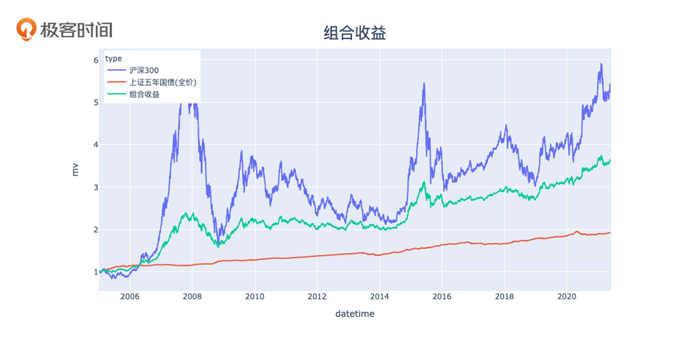
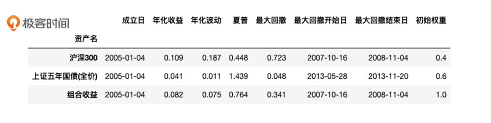
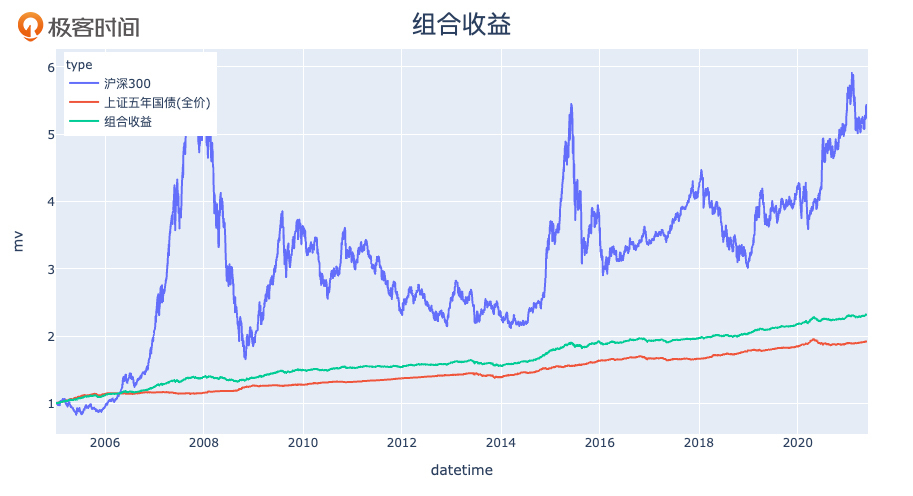
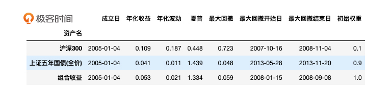
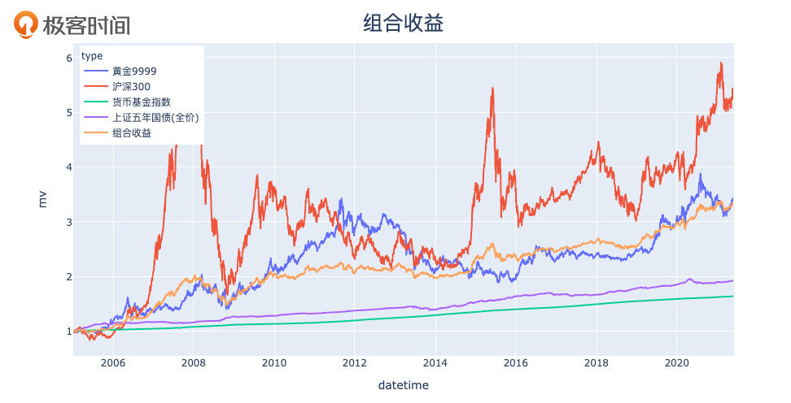
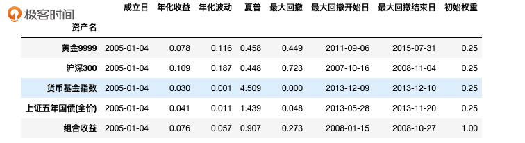
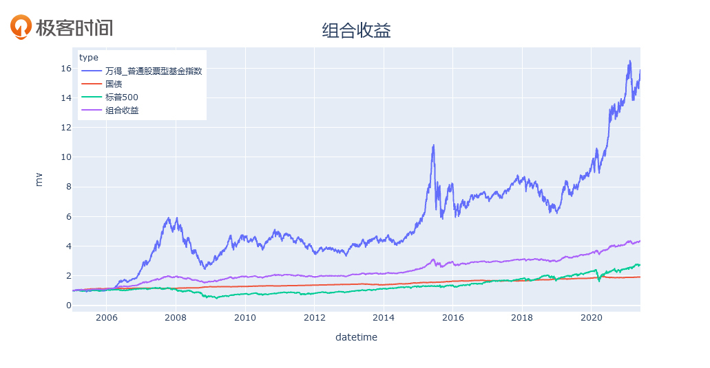
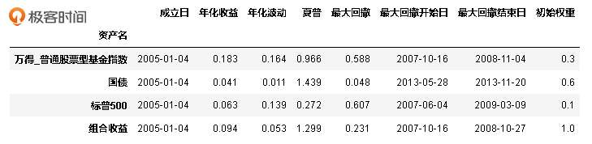
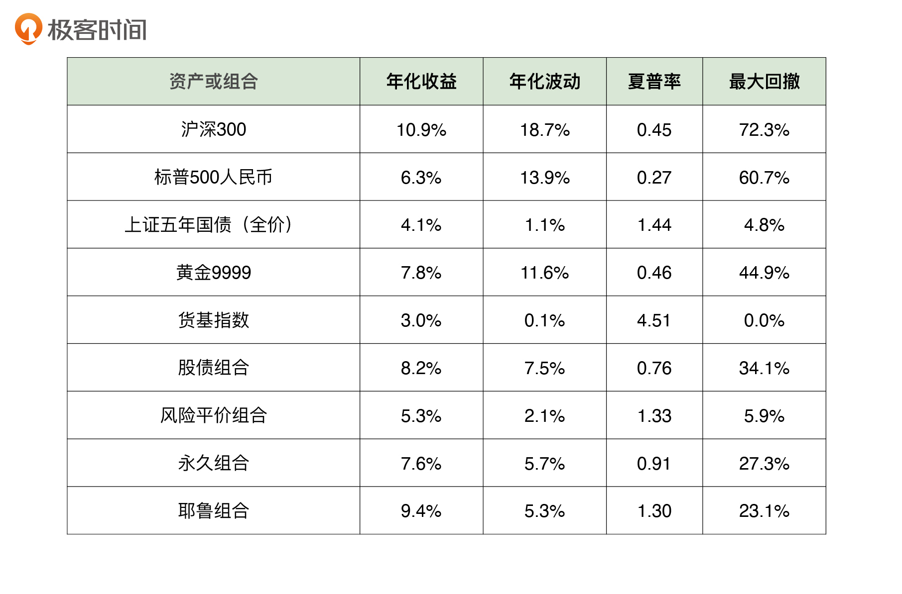

- 00 开篇词 为什么说程序员最适合学财富管理？.md.html
- 01 财富框架：建立属于你自己的财富双塔.md.html
- 02 个人发展：你自己的发展才是最大的财富源泉.md.html
- 03 理财金字塔：如何建立稳固的投资理财结构？.md.html
- 04 实战知识：有哪些收益稳健的经典资产配置组合？.md.html
- 05 支点投资法：主动投资是讲逻辑的！.md.html
- 06 不当韭菜：在财富管理的过程中摆正心态，知己知彼.md.html
- 07 职业方向：如何选择一个有前景的职业方向？.md.html
- 08 职业规划：大公司VS小公司，怎样选择更有前途？.md.html
- 09 期权股权：如何正确处理公司的期权、股权？.md.html
- 10 跳槽涨薪：如何规划一条合理的职业道路？.md.html
- 11 财富拓展：35岁失业？程序员如何拓宽财富渠道？.md.html
- 12 房产投资：如何做出理性的买房决策？.md.html
- 13 实战知识：让我们编程计算下怎么还房贷最合适.md.html
- 14 基金投资：如何让专业人士帮你赚钱？.md.html
- 15 实战知识：如何选出一只优质的基金？.md.html
- 16 股票投资：最适合散户的股票投资方法是什么？.md.html
- 17 投资闭环：如何成为越来越专业的投资者？.md.html
- 18 技术优势：程序员如何用技术超越其他投资者？.md.html
- 19 量化投资：典型的量化投资系统都包含哪些模块？.md.html
- 20 价值投资：永远不过时的中长期投资策略.md.html
- 21 趋势跟踪：怎样跟着趋势一起赚钱？.md.html
- 22 轮动策略：如何踩准市场变换的节奏？.md.html
- 23 对冲思想：这个世界上有稳赚不赔的生意吗？.md.html
- 24 多因子模型：整合不同策略，形成合力的顶层框架.md.html
- 25 机器学习：我们能用机器学习来建立投资模型吗？.md.html
- 26 量化实战：从0到1搭建起一套简单的量化投资系统（上）.md.html
- 27 量化实战：从0到1搭建起一套简单的量化投资系统（下）.md.html
- 番外一 王喆对话李腾：程序员对基金经理的灵魂十问（上）.md.html
- 番外三 有哪些能够持续学习的参考资料和相关网站？.md.html
- 番外二 王喆对话李腾：程序员对基金经理的灵魂十问（下）.md.html
- 番外四 知识总结：这门课的全部思维导图.md.html
- 答疑课堂（一） 财富框架篇、个人发展篇思考题集锦.md.html
- 答疑课堂（二） 投资实战篇、投资进阶篇思考题集锦.md.html
- 结束语 知行合一：财富管理是一生的事情.md.html
- 捐赠
04 实战知识：有哪些收益稳健的经典资产配置组合？
你好，我是李腾，非常荣幸得到王喆的邀请，来分享一些我自己关于资产配置的思考。
先简单做个自我介绍吧。从清华大学数学系毕业之后，我从事了十年以上的量化投资和基金管理的工作，先后在国信证券和银华基金担任高级量化投资经理，参与负责过百亿级量化基金的投资管理。2021年，我加入了金融科技公司璞元科技担任首席投资官，希望用更加科技和智能的手段，来帮助更多人践行科学投资。
提起资产配置，可以说是我的“老本行”了。今天，我就沿着王喆上一讲介绍“投资理财塔”的思路，跟你讲一讲那些收益稳健，同时对普通投资者来说又相对好操作的经典投资组合。
最经典、极易操作的“股债组合”
我首先要介绍的是一个历史最悠久，操作极简单，但至今仍有很强实用价值的组合“股债组合”。
顾名思义，“股债组合”是指主要投资于“股票”和“债券”这两类资产的资产配置组合。其中，60/40股债配置组合，即60%股票和40%债券的组合最为经典，它大约在50年前就开始在美国流行，成为当时各投资顾问机构推荐给投资者的标准组合。
股债组合中，股票部分是这个组合产生长期收益的核心驱动力，而加入适当比例的债券资产，将显著降低组合整体的波动水平，让投资者承担的风险大幅减少。海外市场最著名的股债混合组合，就是我们刚刚提到的60/40股债组合。在国内，因为股票的波动率相对偏高，而债券的波动率相对偏低，所以我们针对国内投资标的的特点，调整为40/60股债组合，即40%的股票和60%的债券。
下面，我就来给大家切实地验证一下，从2005年到2021年，这十六年间40/60股债组合的收益率和波动率到底是怎样的。在这里，我使用沪深300指数代表股票资产，使用上证5年国债指数代表债券资产。


从图1的股债组合净值走势图中，我们可以看出，绿色的股债配置组合的净值曲线虽然有波动，但比蓝色的纯股票资产曲线平滑了很多；同时，股债配置组合的长期收益又比纯债券资产高很多。所以，从直观上看，股债组合确实通过简单的资产配置策略，就把股票和债券的优势都占了。
这时候你可能会问了，有没有更加量化的指标来直接表示收益率和风险呢？当然是有的。我推荐你关注图2中的两个指标，年化收益和最大回撤。
年化收益很好理解，就是考察期上按复利计算的年均收益。最大回撤，指的是净值曲线中最大一次下跌的幅度，它是衡量一个投资标的风险特性的最重要指标。
图中还有一个指标叫“夏普率”，它是通过年化收益减去无风险收益率（本文简单设为2.5%）后，再除以年化波动得来的，描述了承担单位波动能够换取的超额收益，专业投资者一般用它来直接衡量一个投资标的的好坏。
简单的40/60股债配置组合，长期年化收益有8.2%，已经接近纯股票10.9%的年化收益水平了。同时，它的最大回撤从纯股票的72.3%大幅降低到34.1%。
72.3%的最大回撤是什么概念呢？如果你对自己的风险偏好没有明确的认知，只要问自己这样一个问题就够了：如果自己的资产下跌7成，晚上还能不能睡好觉？如果你觉得自己会像大多数人那样寝食难安，那3成最大回撤的股债组合肯定就更适合你。
有的同学可能是风险极度厌恶型的投资者，觉得3成的损失都不太能承受，那么有没有风险更可控的资产配置方案呢？其实是有的。下面我要介绍的风险平价组合，就是一种以组合风险为出发点来设计的方案。
风险更加可控的“风险平价组合”
风险平价组合是由波士顿磐安资产管理公司的钱恩平博士提出的，这个组合的设计思路，是让每类资产对组合整体风险的影响大致相等。
拿上面讲到的40/60股债组合来说，股票资产对这个组合整体风险的影响远远大于债券，这就让这个组合的风险跟股票过于强相关了，不利于通过分散风险来增强整个组合的稳定性。要避免这个问题，就要调整资产配比，让股票和债券对股债组合的风险贡献一致。这就是风险平价组合的基本思想。
那具体怎么做呢？我想主要分三步：
第一步，罗列出一系列你想要投资的资产类别。
第二步，计算这些资产类别指数的历史波动率，也就是年度收益的波动水平。
第三步，用这些波动率的倒数作为权重来构建组合。
下面，我继续使用股票和债券作为例子，来构建一组股债风险平价组合。
代表股票资产的沪深300指数，长期波动率大致是20%；代表债券资产的上证5年国债指数，波动率大致是2%。它们波动率的倒数比值大致是1:10，这样就得出了我们构建组合的权重。
接下来我们看一个回测实例。回测是对一种投资策略在历史数据上的复盘，相当于用历史数据检验策略的实战效果，在量化策略的研发中是一种最常用的手段，类似于软件开发的测试环节。
我们大致按照10%股票和90%债券的权重，在2005年初开始建仓这组股债风险平价组合，之后每季度再平衡一次，也就是按照当时的资产价格重新把股债的比例调整到1:9。我们可以得到如下的回测结果：


在这里，你可以比较下前面的图1、图2，可以看到，风险平价组合与前面的股债组合相比，最大回撤大幅下降，只有6%。我想，这样稳定的组合一定可以让你睡好觉了吧。当然，作为降低风险的代价，它的年化收益也下降到了5.3%。但如果你能坚持这样的投资组合，保持收益率的稳定，长期的复利也能够显著提升你15年后的财富水平。
风险平价组合的背后逻辑是分散风险，让组合整体的收益来源多样化，这样就能够相对安全地穿越各种不利的市场情况。当然，加入越多的投资标的，组合的风险就越分散，组合整体的收益就越稳定，这是需要一定的调研和计算能力的。
讲到这里，有的同学可能又有疑问了，我猜肯定有人想说：李老师，我们这些程序员都是业余选手，不懂也不会算波动率，而且也不想在资产配置上投入太多精力。能不能直接给我个“标准答案”，可以啥都不用多想，一直闭眼投的那种？
这听起来挺悬的，也许你自己都要质疑了：还有这么好的事？天下哪有免费的午餐？但是你别说，还真有，就是王喆上一讲提到过的永久组合。我下面就详细地分析一下永久组合设计的理念和它的收益表现。
可以盲投一辈子的“永久组合”
我们在上一讲也提到过，永久组合的设计初衷是希望构建一个能够终生持有的资产配置组合，通俗点说呢，就是一辈子闭着眼投不用管的配置组合。
要设计这样一个组合，它包含的所有投资标的都应该具有长期的生命力，不能说5年、10年之后就从市场上消失了。而且，组合权重的确定应该非常简单，不需要做什么数据统计或者信息搜集工作，这样才能“永久”。
于是，上世纪80年代，美国的专业投资人哈利·布朗就提出了永久组合，它以相等的权重，配置于四类非常常规并且“永久”的资产：25%的股票、25%的国债、25%的黄金和25%的现金。股票和国债，我们在介绍股债组合的时候都熟悉了，新加入的黄金则是一把对抗通货膨胀的“利器”，而现金可以最大程度上削弱风险，并留出流动资金。
接下来，我们通过回测看看永久组合在中国市场的实际效果。
这里还是用沪深300指数代表股票资产，上证5年国债指数代表债券资产，黄金资产则用黄金期货指数来代表，现金资产呢，我们使用货币基金。按这四种资产各25%的权重在2005年初建仓，之后每季度再平衡一次，得到如下的回测结果：


你可以看到，永久组合的长期年化收益达到了7.6%，而且相比股债组合的34.1%，最大回撤降低到了27.3%。更重要的是，永久组合的稳定性已经在超长历史跨度中，得到了反复的验证。
我们再看下永久组合在美国市场的效果，你会更明显地感受到这个组合的优势。由于美国金融市场的稳定性更好，永久组合在长达45年跨度中的表现是，收益率8.15%，最大回撤仅12.42%，这充分证明了它稳定性和持久性的特点。这里，我引用了新全球资产配置的徐杨老师关于资产配置组合超长期业绩的数据，如果你想详细了解，可以看这篇文章。
到目前为止，我介绍的组合都是侧重于大类资产投资的，风险较低，收益较稳定。那我们能不能通过投入更多的调研时间，让我们的组合收益更高呢？答案当然是肯定的。如果你有更强的投研能力，更多的精力，我们是可以达成更高的收益率的。关于这一点，接下来我向你介绍一下“耶鲁组合”，看看你能不能从中汲取一些经验。
标的丰富、业绩卓越的“耶鲁组合”
“耶鲁组合”在机构投资者中非常出名，它是由美国耶鲁大学捐赠基金会管理的，负责人是大卫·史文森。在他管理该基金的三十五年间，基金规模从13亿美元增长至312亿美元，获得了远高于市场平均水平的长期收益。
耶鲁组合的基本构建思路是：要尽量多地引入有坚实盈利逻辑的资产类别。例如，这个组合重配了当时其他捐赠基金都不敢配置的对冲基金、股权基金、风险投资等资产。这些当时的新兴资产，确实是创造了经济价值，我们只要能设法鉴别出其中的优质资产，就可以相对安全地分享它们成长过程中带来的的巨大收益。而且，因为当时其他机构不敢配置这些新兴资产，这些资产当时的价格都比较便宜。耶鲁基金因此获得了长期卓越的业绩。
对于我们普通人来说，耶鲁组合似乎很难复制，因为像对冲基金、股权、风投等资产，普通人很难接触到，也很难进行鉴别。但也不必望洋兴叹，我们仍然可以在力所能及的范围内复制它的基本思想：尽量扩充和优化自己的资产类别，增加收益来源。
举个例子，针对上面我们刚刚学习的股债组合，可以做这样的优化：
- 引入美股资产。因为相比A股，美股在更长的时间区间内有更加稳健的表现；
- 将代表A股大盘指数的沪深300指数基金替换为主动股票型基金。主动股票型基金主要由更加专业的基金经理管理。因为A股现阶段散户比例仍然较大，因此专业投资者凭借信息和技术优势，有更丰厚的超额收益空间。
接下来我再给你演练下具体的实际操作。我们用“万得-普通股票型基金指数”代表中国的主动股票型基金资产，使用“标普500人民币指数”代表美国股票资产，使用上证5年国债指数代表债券资产。按30%中国主动股基，10%美国股票资产和60%债券的权重在2005年初建仓，之后每季度再平衡一次，得到下面两张图片中显示的回测结果：


从业绩指标表可以看出，我们创建的类“耶鲁组合”，仅利用23.1%的最大回撤就获得了非常有吸引力的9.4%的长期年化收益，在风险和收益两个维度都击败了40/60股债组合。我们仅仅是做了一些大类资产的简单筛选和回测，就可以享用到低风险、高回报的组合收益，这就是资产配置带来的免费午餐！
如果把这个组合跟单一资产相比，它的优势会更加明显。例如，和代表股票的沪深300相比：耶鲁组合用了不到三成的最大回撤（23% vs 72%），换来了约九成的收益（9.4% vs 10.9%），大幅度提升了投资的性价比。你看，是不是可以说得上“物美价廉”了？
小结
到这里，我们的这一讲就接近尾声了。为了方便你对比这一讲提到的所有组合，我把它们的业绩指标全部总结到了下面的表格里。

可以看出，四种经典资产配置组合中的任何一种，相对于单个资产来说夏普率都有显著提升，明显改善了风险收益特征。也就是说，用远远小于单一资产的回撤水平，获得了跟单一资产中收益最高的股票资产接近的长期年化收益。
事实上，在财富管理的过程中，学会应用资产配置的思想，比选择具体的组合方案重要得多。即便你使用的不是这一讲提到的四种经典配置方案，只要投资者将一些相关性较低的资产类别进行组合，并用一个较为均衡的权重来分配，分散化的投资就可以大幅降低你的财富风险，让你的收益率更加稳健。
这就到了发挥程序员技术优势的时候了。你可以通过编程，非常方便地组合出收益率高，最大回撤低的配置方案来。
思考题
在最后的业绩指标对照表里，货基指数的夏普率居然达到了惊人的4.51，远远高于耶鲁组合的1.30。请你思考这几个问题：
- 货基指数是一个优于耶鲁组合的投资方案吗？
- 货基指数的夏普率为什么这么高呢？
- 如果让你去选择资产配置的方案，你是会选择货基指数还是耶鲁组合呢？
期待在留言区看到你的思考和见解。同时，如果你对这一讲的知识有任何困惑，都可以在留言区提出来，我会一一为你解答。
© 2019 - 2023 Liangliang Lee. Powered by gin and hexo-theme-book.